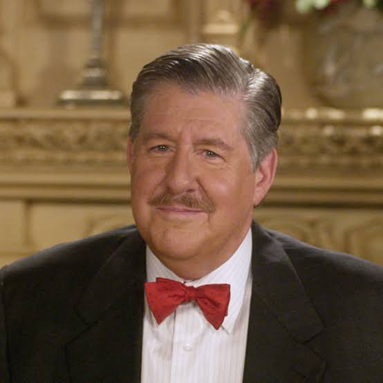

In 2016, a revival of the series was released on Netflix, titled "Gilmore Girls: A Year in the Life." The revival consists of four 90-minute episodes, each representing a different season of the year. The story picks up ten years after the original series ended, following the lives of Lorelai and Rory Gilmore as they navigate new challenges and changes in their personal and professional lives.reason behind the revival was the death of "Richard" who was played by actor Edward Herrmann. He died in 2016.

The revival explores themes of family, love, and personal growth, while also addressing the passage of time and the impact of past events on the characters' present lives. It provides closure for long-time fans of the series, while also introducing new storylines and character developments.